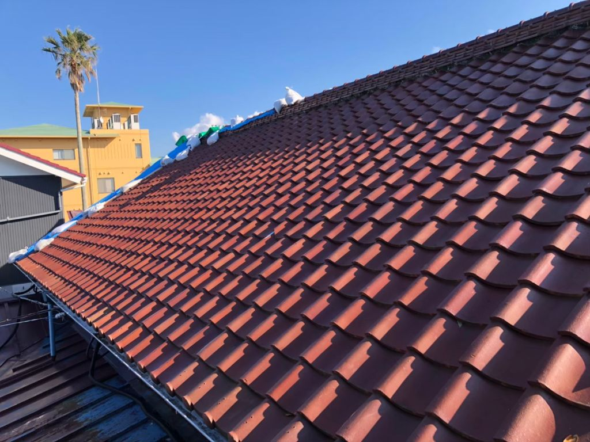

瓦の割れを放置した結果｜修理費100万円の失敗事例と早期対処の重要性
公開日：2026年2月18日
「瓦1枚くらい割れても大丈夫」と3年放置した結果、雨漏りと屋根裏の腐食で修理費100万円超に。実際の失敗事例から学ぶ教訓。

瓦の割れとブルーシート応急処置の実例
実際にあった失敗事例（町田市・Bさん宅）
「瓦が1枚割れてるのは知ってました。でも、1枚くらい大丈夫だろうって…」
3年後 → 雨漏り発生 → 屋根裏腐食 → 修理費110万円
これは、実際に当社で修理をさせていただいたBさんの事例です。「瓦1枚の交換なら5万円で済んだのに…」と深く後悔されていました。
Bさんの失敗の経緯（時系列）
【築15年目・春】
瓦が1枚割れているのを発見
「屋根の真ん中あたりの瓦が割れてるのに気づいたけど、まあ1枚くらいなら…と思って放置しました」
【1年後・梅雨時】
大雨の日に天井にシミができる
「でも、晴れたら乾くし、まだ大丈夫かなと…」
【2年後・台風後】
天井のシミが広がり、カビの臭いが
「そろそろ見てもらわないと…と思いつつ、忙しくて先延ばしに」
【3年後・大雨の日】
天井から水がポタポタ…雨漏り本格化
「これはまずい！」と慌てて業者に連絡。点検の結果…
- 割れた瓦の下の防水シートが破損
- 屋根裏の木材が腐食
- 天井裏にカビが大量発生
- 断熱材が水を吸って重量増加
最終的な修理費：110万円
内訳：
※最初に瓦を交換していれば5万円で済みました
なぜ瓦1枚の割れが大惨事に？
多くの方が「瓦は丈夫だから、1枚くらい割れても大丈夫」と考えます。しかし、これが大きな誤解です。
瓦1枚の割れ → 大惨事のメカニズム
瓦が割れる
飛来物、経年劣化、凍害などで瓦にひび割れや欠けが発生。
雨水が直接防水シートに当たる
本来、瓦で守られているはずの防水シート（ルーフィング）に雨水が直撃し続けます。
防水シートが劣化・破損
紫外線と雨で防水シートが急速に劣化。通常10〜20年持つものが、2〜3年で破れることも。
雨水が屋根裏に侵入
屋根裏の木材が常に湿った状態になり、カビと腐朽菌が繁殖します。
構造材が腐食
屋根を支える垂木（たるき）や野地板が腐り、家の構造強度が低下します。
つまり、「瓦1枚の割れ」が防水システム全体を破壊し、さらに建物の構造まで傷めてしまうんです！
瓦の割れを発見する方法
瓦の割れは、地上から目視で確認できる場合と、屋根に登らないと分からない場合があります。
地上から確認
- 2階の窓から屋根を見下ろす
- 隣の建物から確認
- 双眼鏡で遠目から観察
割れのサイン
- 瓦の色が変わっている
- 一部の瓦が欠けて見える
- 庭に瓦の破片が落ちている
絶対にやってはいけないこと
自分で屋根に登らない
転落事故のリスクが非常に高く、また瓦を踏んで余計に割ってしまう危険もあります。必ずプロに依頼しましょう。
よくある質問
瓦1枚の交換費用はいくらですか？
3万円〜5万円程度です。割れた瓦の種類や屋根の高さによって変動しますが、早期発見なら比較的安価に修理できます。
瓦が割れる原因は何ですか？
主な原因：
- • 飛来物（台風時の枝、看板など）
- • 経年劣化（30年以上経過）
- • 凍害（水分が凍結・膨張して割れる）
- • 施工不良（下地が弱い）
火災保険で修理できますか？
台風や強風が原因の場合は適用される可能性があります。経年劣化は対象外ですが、自然災害による破損なら保険が使えることが多いです。
保険申請のサポートも行っていますので、まずはご相談ください。
まとめ
- 瓦1枚の割れを3年放置 → 修理費110万円の大惨事に
- 早期発見なら3〜5万円で済む
- 台風後は必ず屋根を確認（地上から目視）
- 自分で屋根に登らない、プロに点検依頼を
- 火災保険が使える可能性も忘れずに確認
瓦の割れ、放置していませんか？
無料点検で屋根の状態をチェック！
早期発見で修理費を大幅に節約できます。
📍 対応エリア：町田市・横浜市青葉区・川崎市麻生区・稲城市・日野市